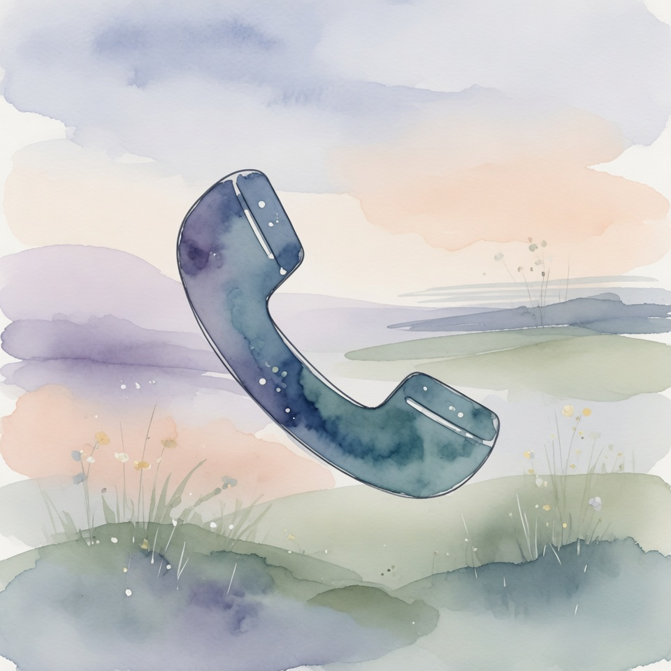
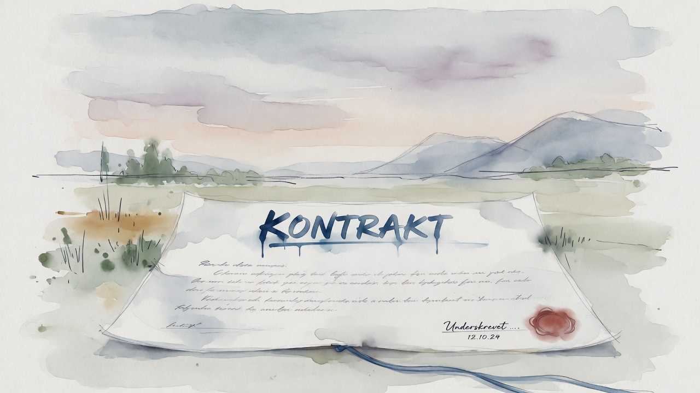
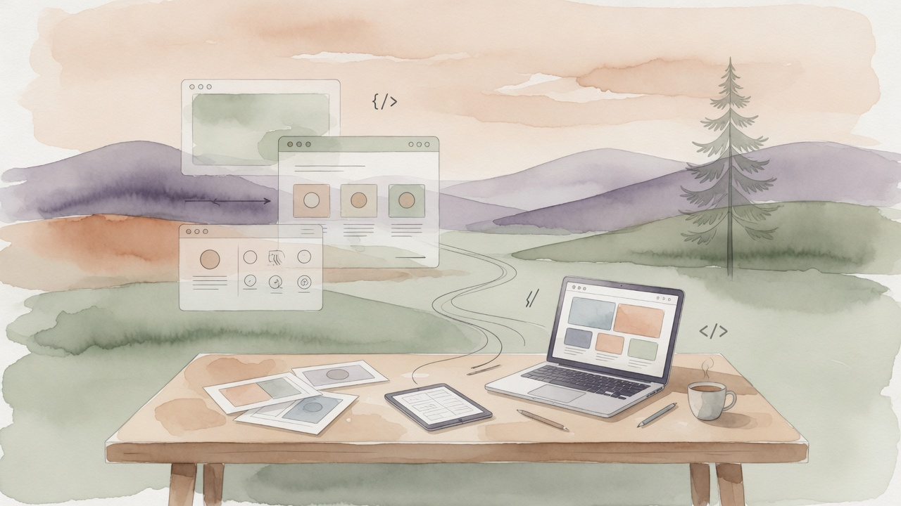
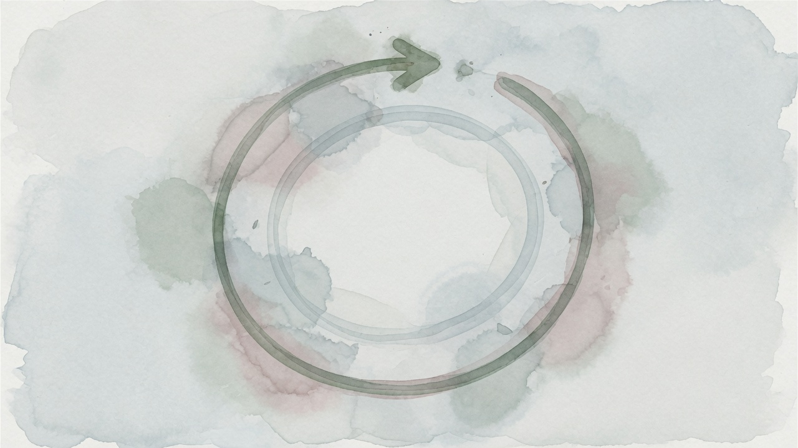
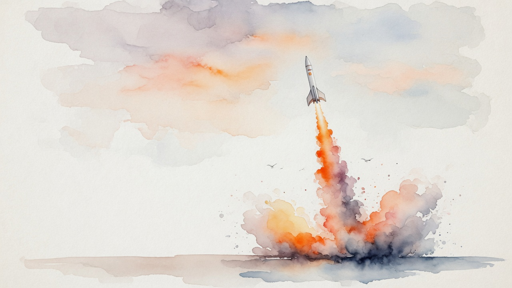

Førsteinntrykket avgjør alt.
Kutt ut den treige, kjedelige nettsiden. Den taper deg potensielle kunder!
Jeg bygger nettsider som fanger oppmerksomhet,
bygger tillit, og selger...
Og det betyr flere kunder inn døra!
— Det er lett å undervurdere effekten av en god nettside... Men kanskje er det lettere å relatere til den negative effekten av en dårlig nettside…
Fra første kontakt
til ferdig nettside:

Ta kontakt
Send meg en melding eller ring. Fortell kort om bedriften og hva du trenger — så svarer jeg innen 24 timer med et uforpliktende tilbud.
Tilbud på bordet
Fastpris, klart omfang og konkret leveringstid. Svart på hvitt. Du bestemmer om vi kjører i gang — ingen press.

Jeg bygger
Du leverer tekster og bilder (jeg hjelper til hvis du trenger det). Jeg designer, koder og tester. Du følger fremdriften underveis.

Du gir tilbakemelding
Du får nettsiden live i en testlenke. To revisjonsrunder inkludert — vi lander detaljene sammen.

Vi lanserer
Siden går live på ditt domene. Jeg er tilgjengelig etterpå for spørsmål, små justeringer og alt du måtte lure på.

La oss lage
noe ordentlig
bra sammen.
Send en melding og jeg svarer innen 24 timer med et uforpliktende tilbud.
- Fornøydgaranti. Opptil fem revisjonsrunder inkludert. Jeg er ikke ferdig før du er genuint fornøyd.
- Prislås. Tilbudet du får er prisen du betaler. Ingen skjulte timer, ingen overraskelser.
- Full eierskap. Du eier kode, domene og innhold fra dag én. Gratis migrasjon hvis du vil flytte.